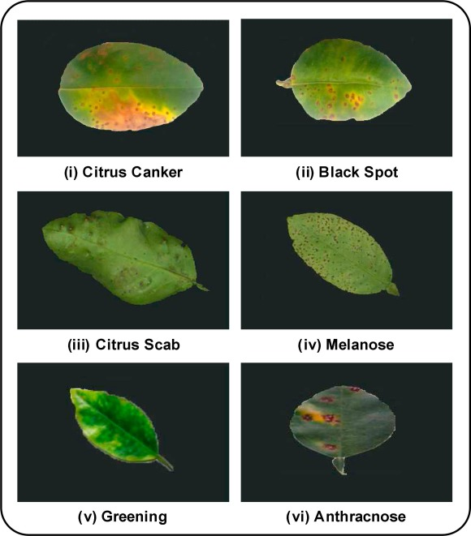

Our Mission
Our AI-based solution helps farmers detect citrus diseases early, ensuring healthier crops and better yields. Upload your citrus plant images, and our system will analyze them to identify potential diseases, offering actionable insights to protect your crops.
How It Works
Simply upload images of your citrus plants in our mobile application, and our AI system will scan for signs of diseases such as Citrus Canker, Greening Disease, and more. With our integrated chatbot which is available both on mobile app and website, you can ask questions, receive guidance, and take the next steps toward better crop health.